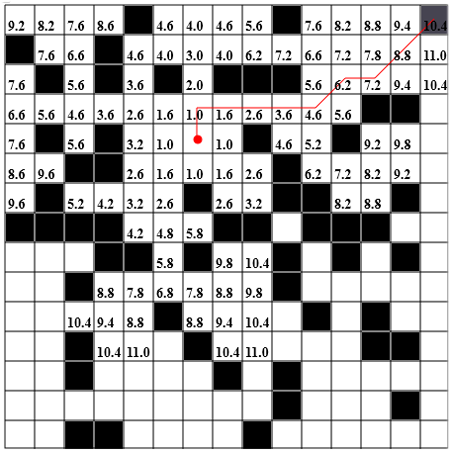

Трассировка алгоритма
На практике широко распространены последовательные алгоритмы трассировки и среди них — волновой. Наряду с недостатками, присущими всем алгоритмам трассировки, входящими в класс последовательных, указанный алгоритм связан со значительными временными затратами и большим объемом
Трассировка соединений является, как правило, заключительным этапом конструкторского проектирования РЭА и состоит в определении линий, соединяющих эквипотенциальные контакты элементов, и компонентов, составляющих проектируемое устройство.
Задача трассировки - одна из наиболее трудоемких в общей проблеме автоматизации проектирования РЭА. Это связано с несколькими факторами, в частности с многообразием способов конструктивно-технологической реализации соединений, для каждого из которых при алгоритмическом решении задачи применяются специфические критерии оптимизации и ограничения. С математической точки зрения трассировка - наисложнейшая задача выбора из огромного числа вариантов оптимального решения.
Одновременная оптимизации всех соединений при трассировке за счет перебора всех вариантов в настоящее время невозможна. Поэтому разрабатываются в основном локально оптимальные методы трассировки, когда трасса оптимальна лишь на данном шаге при наличии ранее проведенных соединений.
Основная задача трассировки формулируется следующим образом: по заданной схеме соединений проложить необходимые проводники на плоскости (плате, кристалле и т.д.), чтобы реализовать заданные технические соединения с учетом заранее заданных ограничений. Основными являются ограничения на ширину проводников и минимальные расстояния между ними.
Исходной информацией для решения задачи трассировки соединений обычно являются список цепей, параметры конструкции элементов и коммутационного поля, а также данные по размещению элементов. Критериями трассировки могут быть процент реализованных соединений, суммарная длина проводников, число пересечений проводников, число монтажных слоев, число межслойных переходов, равномерность распределения проводников, минимальная область трассировки и т.д. Часто эти критерии являются взаимоисключающими, поэтому оценка качества трассировки ведется по доминирующему критерию при выполнении ограничений по другим критериям либо применяют аддитивную или мультипликативную форму оценочной функции, например следующего вида
Данный алгоритм является классическим примером использования методов динамического программирования для решения задач трассировки печатных соединений. Основные принципы построения трасс с помощью динамического алгоритма сводятся к следующему. Все ячейки монтажного поля подразделяют на занятые и свободные. Занятыми считаются ячейки, в которых уже расположены проводники, построенные на предыдущих шагах, или находятся монтажные выводы элементов, а также ячейки, соответствующие границе платы и запрещенным для прокладывания проводников участкам. Каждый раз при проведении новой трассы можно использовать лишь свободные ячейки, число которых по мере проведения трасс сокращается. На множестве свободных ячеек коммутационного поля моделируют волну влияния из одной ячейки в другую, соединяемых впоследствии общим проводником. Первую ячейку, в которой зарождается волна влияний, называют источником, а вторую - преемником волны. Чтобы иметь возможность следить за прохождением фронта волны влияний, его фрагментам на каждом этапе присваивают некоторые веса:
Где Pk и Pk-1 - веса ячеек k-го и (k-1)-го фронтов; - весовая функция, являющаяся показателем качества проведения пути, каждый параметр которой характеризует путь с точки зрения одного из критериев качества (длины пути, числа пересечений и т.п.). На Pk накладывают одно ограничение - веса ячеек предыдущих фронтов не должны быть больше весов ячеек последующих фронтов. Фронт распространяется только на соседние ячейки, которые имеют с ячейками предыдущего фронта либо общую сторону, либо хотя бы одну общую точку. Процесс распространения волны продолжается до тех пор, пока её расширяющийся фронт не достигнет приемника или на И-ом шаге не найдется ни одной свободной ячейки, которая могла бы быть включена в очередной фронт, что соответствует случаю невозможности проведения трассы при заданных ограничениях. Если в результате распространения волна достигла приемника, то осуществляют «проведение пути», которое заключается в движении от приемника к источнику про пройденным на этапе распространения волны ячейкам, следя за тем, чтобы значения Pk монотонно убывали. В результате получают путь, соединяющий эти две точки. Из описания алгоритма следует, что все условия, необходимые для проведения пути, закладываются в правила приписания веса ячейкам.

В данном методе источниками волн являются обе ячейки, подлежащие электрическому объединению. При этом на каждом k-ом шаге поочередно строят соответствующие фронты первой и второй волн, распространяющихся из этих ячеек. Процесс продолжается до тех пор, пока какая-либо ячейка из фронта первой волны не попадет на фронт второй волны или наоборот. Проведение пути осуществляют из данной ячейки в направлении обоих источников по правилам, описанным в волновом алгоритме Ли. Оценим число ячеек, просматриваемых на этапе распространения волны, при использовании в качестве источников одной или двух объединяемых точек. Пусть расстояние между этими точками R. Тогда для первого случая в момент достижения волной ячейки-приемника площадь просмотренной окрестности имеет величину (знак равенства соответствует отсутствию преград пути распространения волны). Для второго случая в момент встречи фронтов двух волн площадь просмотренной окрестности . Таким образом, при использовании метода встречной волны просматриваемая площадь, а следовательно, и время, затрачиваемое на этапе распространения волны, уменьшаются примерно вдвое. Недостатком метода является необходимость выделения дополнительного разряда памяти на каждую рабочую ячейку поля для хранения информации о принадлежности её к первой или второй волне. Однако выигрыш в повышении быстродействия восполняет указанный недостаток, поэтому данный метод используют во всех случаях, когда это позволяет объем оперативной памяти ЭВМ.
В данном алгоритме, предложенным Л.Б. Абрайтисом, выбор ячеек для определения пути между соединяемыми точками A и B производят по заранее заданным направлениям, подобным лучам. Это позволяет сократить число просматриваемых алгоритмом ячеек, а следовательно, и время на анализ и кодировку их состояния, однако приводит к снижению вероятности нахождения пути сложной конфигурации, и усложняет учет конструктивных требований к технологии печатной платы. Работа алгоритма заключается в следующем. Задается число лучей, распространяемых из точек A и B, а также порядок присвоения путевых координат (обычно число лучей для каждой ячейки-источника принимается одинаковым). Лучи A(1), A(2),…, A(n) и B(1), B(2),…, B(n) считают одноименными, если они распространяются из одноименных источников A или B. Лучи A(i) и B(i) являются разноименными по отношению друг к другу. Распространение лучей производят одновременно из обоих источников до встречи двух разноименных лучей в некоторой ячейке C. Путь проводится из ячейки C и проходит через ячейки, по которым распространялись лучи. При распространении луча может возникнуть ситуация, когда все соседние ячейки будут заняты. В этом случае луч считается заблокированным и его распространение прекращается.